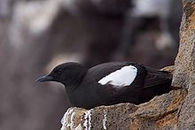
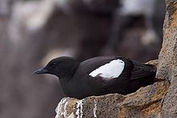

| Black Guillemot | |
|---|---|
|  | |
| Black Guillemot resting on a cliff in Reykjanes, Iceland | |
| Conservation status | |
| Binomial name | |
| Cepphus grylle (Linnaeus, 1758) |
| Black Guillemot | |
|---|---|
|  | |
| Black Guillemot resting on a cliff in Reykjanes, Iceland | |
| Conservation status | |
| Binomial name | |
| Cepphus grylle (Linnaeus, 1758) |
The Black Guillemot or Tystie (Cepphus grylle) is a medium-sized alcid.
Adult birds have black bodies with a white wing patch, a thin dark bill, and red legs and feet. They show white wing linings in flight. In winter, the upperparts are pale grey and the underparts are white. The wings remain black with the large white patch on the inner wing. They are 32–38 cm in length, and with a 49–58 cm wingspan.
Their breeding habitat is rocky shores, cliffs and islands on northern Atlantic coasts in eastern North America as far south as Maine, and in western Europe as far south as Ireland.They are one of the few birds to breed on Surtsey, Iceland a new volcanic island. In the UK it is fairly common breeding bird in western and northern Scotland and Northern Ireland. In the rest of Great Britain they only breed at St. Bees Head in Cumbria, the Isle of Man and on east Anglesey in north Wales. Some birds breed in Alaska where their range overlaps with the Pigeon Guillemot. They usually lay their eggs in rocky sites near water.
These birds often overwinter in their breeding areas, moving to open waters if necessary, but usually not migrating very far south.
They dive for food from the surface, swimming underwater. They mainly eat fish and crustaceans, also some mollusks, insects and plant material.
The call in the breeding season is a high whistle. The red gape is also prominent then.

{kind=link}
{kind=link}
{kind=link}
{kind=link}